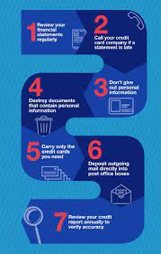
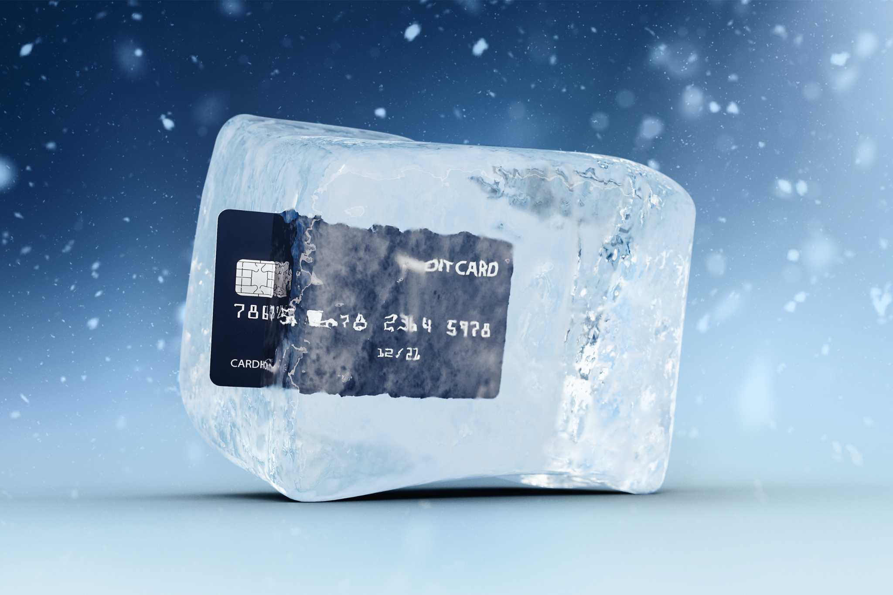

No one is truly invulnerable to identity theft. Even the most cautious person could fall victim. However, that
doesn't mean that you can't make life a lot harder
for identity theives to steal your identity.
Here are some steps you should take to prevent yourself from identity theft:
- Never give out personal information over the phone, through the mail, or over the internet. In fact,
you
should be careful not to overshare information about yourself (or others) on any online platform. This
makes it
very easy for identity thieves to gather your info and impersonate you.
- Collect your mail daily. This might seem like more of an annoyance more than anything, but some
criminals can
be suprisingly low-tech and hijack your mail system to get access to all the information they need. If you
think
you'll be away for a bit, make sure to put your mail on hold, or make other arrangements.
- Be very careful of phishing, which are fraud messages intended to steal your information. Make sure not
to click any suspicious links or reply to suspicious looking emails.
- Check your credit reports regularly to spot any irregularities and abnormalities. If you notice
something
that’s wrong (for example, a sum of money loaned out that you don’t know about), make sure to immediately
check
with the creditor or bank. Spotting fraudulent behavior early on can really help prevent future damage.
- Review your transactions. Check your credit card bills for any unauthorized charges or withdrawals. If
you
find any, report them immediately to your credit card provider. Also make sure that nobody finds out what
your
credit card number and PIN are.
- Don’t trust public WIFI and/or random things on the internet. Only download from sites that you know
are safe
and reliable. Hackers and viruses can easily penetrate through vulnerable systems, so you want to make
sure to
prevent that before it happens. Make sure that your devices have the necessary security software installed
as
well. Hackers that do get into your system can have access to so much information, many of which you don’t
think
is even useful!
- Use strong passwords online. You might’ve been taught this early on, and it’s still very important to
keep in
mind. Easy passwords can be easily guessed, and you certainly don’t want some random stranger accessing
your
million-dollar bank account! Additionally, make sure to create different passwords for each of your online
accounts. Never reuse a password. This limits how much damage someone can do if one of your passwords
becomes
compromised. Also, make sure to not include personal details in your password - save those for social
media (but
don't even think about sharing your Social Insurance Number online)
- Stay educated about internet safety and security, as well as identity theft. Click here to learn more
information.

Of course, one must always be on alert to be able to identify if they have their identity stolen. Some common
signs include:
- Notifications about new unrecognized accounts created.
- Added charges, bills for unknown goods or services.
- Warnings of suspicious activity (from fraud control departments, banks, or personal accounts).
- Denied services due to an unexpected credit check
- Financial account statements show unauthorized transactions
If this is the case, it isn't the end of the line for you yet. There's still hope.
Here are the steps you must take if you suspect your identity has been stolen:

- Freeze your credit. Limit the damage fraudsters can do by contacting your banks as soon as you become
aware
- Change all of your passwords, even ones that you think haven't been compromised. There's no telling how
deep they are into your identity, so you should never underestimate an identity thief's
ability
- Get a copy of your credit report and check it for new accounts that you haven't set up or other strange
activity. Contact Equifax or another credit bureau and request for a Fraud Warning to be put on your
credit file.
- Contact government agencies and ask them to put alerts on your accounts just in case. Thieves might try
and take legal documents out in your name. If you've lost your physical passport or ID cards, you must let
them know.